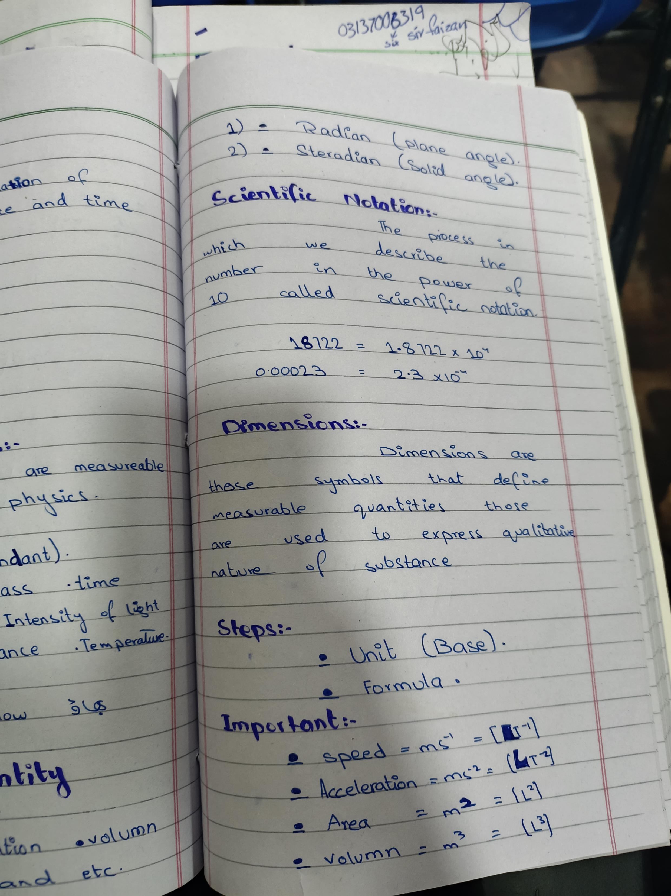

CHAPTER NO 01
Supplementary Angles · Scientific Notation · Dimensions Steps
Angle Units
Supplementary
- 1) Radian (plane angle)
- 2) Steradian (Solid angle)
Scientific Notation :-
The process in which we describe the number in the power of 10 called
scientific notation.
18722 = 1.8722 × 10⁴
0.00023 = 2.3 × 10⁻⁴
جب پوائنٹ کو لیفٹ سائیڈ پر لے کر جائیں تو 10 کی پاور پوزیٹیو (+ve) ہو
گی، اور اگر رائٹ سائیڈ پر لے کر جائیں تو نیگیٹیو (-ve)۔
Dimensions :-
Dimensions are those symbols that define measurable quantities those
are used to express qualitative nature of substance.
STEPS :-
Important :-
Summary
| Quantity |
Base Unit |
Dimension |
| speed |
ms⁻¹ |
[LT⁻¹] |
| Acceleration |
ms⁻² |
[LT⁻²] |
| Area |
m² |
[L²] |
| volumn |
m³ |
[L³] |
Original Notebook Page 9

Add page9.jpg next to this HTML file
Pinch to zoom · Original notebook proof